1. YABOAZ MVP와 바이브코딩의 정의
YABOAZ의 MVP는 단순한 데모 화면이 아닙니다. 실제 사용자가 입력하고, AI가 판단을 보조하고, 사람이 승인하고, 시스템이 실행 결과를 기록하며, KPI로 효과를 검증할 수 있는 최소 실행 해법입니다.
문제 하나 → 사용자 한 그룹 → 핵심 데이터 하나 → 실행 기능 하나 → KPI 하나
바이브코딩은 “말만 하면 자동으로 완성되는 개발”이 아니라, FDE가 문제와 업무 구조를 명확히 정의하고 AI 코딩 도구로 빠르게 구현·검증하는 실행 방식입니다.
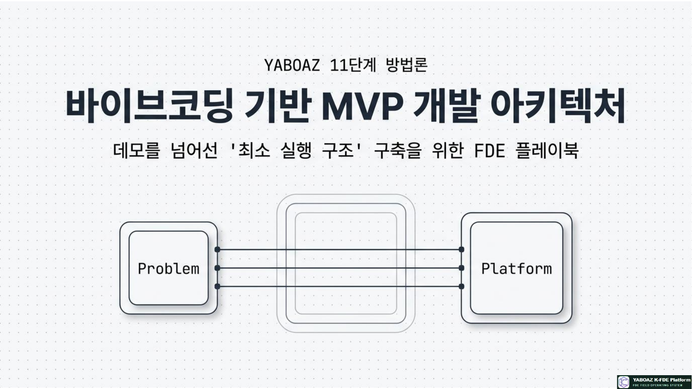
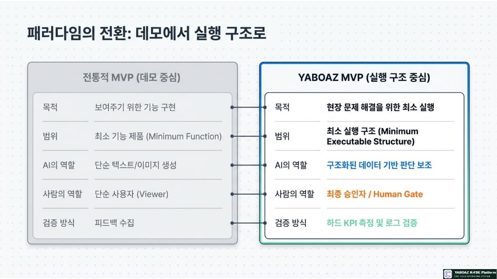
2. 11단계의 위치와 입력·산출물
11단계는 앞선 설계가 실제로 작동하는지 확인하는 첫 실행 단계입니다. 완성품을 만드는 것이 아니라, 핵심 문제를 검증할 수 있는 작동 가능한 첫 버전을 만듭니다.
입력 자료
| 입력 | 활용 |
|---|---|
| 2A4 문제정의·Evidence·Discovery | MVP가 해결할 문제와 기능의 필요 근거를 확인합니다. |
| 인터뷰·온톨로지 7요소 | 사용자 업무와 데이터·상태·이벤트 구조를 반영합니다. |
| AI 판단·Agent 사양서 | AI 역할·권한·금지 행동·출력 기준을 구현합니다. |
| 워크플로·화면·데이터·API | 승인·예외·로그·화면과 연결되는 개발 기준으로 사용합니다. |
| KPI 정의 | Bootcamp에서 검증할 성과 측정 기준을 구현합니다. |
핵심 산출물
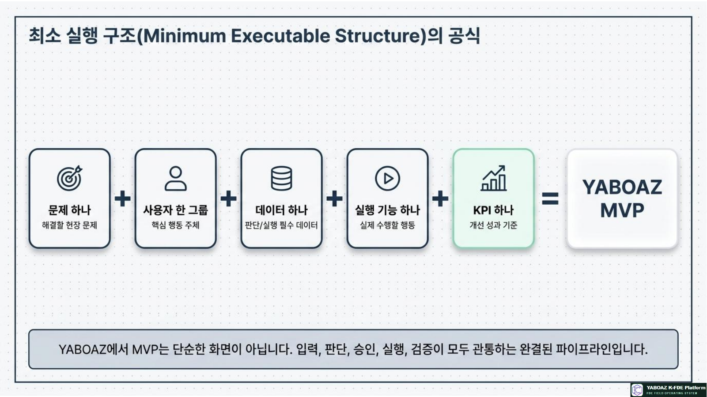
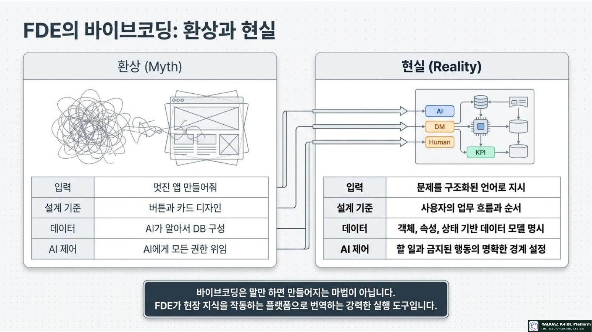
3. MVP 개발 전체 흐름 10단계
MVP 문제 범위 확정
Evidence로 확인된 핵심 문제 하나와 KPI, 제외 범위를 정합니다.
핵심 사용자 정의
문제를 직접 겪고 실행·승인·피드백을 담당하는 사용자 그룹을 선정합니다.
핵심 업무 흐름 선정
이벤트 발생부터 AI 추천·승인·실행·기록·KPI까지 최소 흐름을 정합니다.
필수 화면 선정
대시보드·목록·상세·AI 추천·승인·로그·KPI 중 필요한 화면만 고릅니다.
데이터 모델 최소화
판단·화면·승인·로그·KPI에 꼭 필요한 객체와 필드만 구현합니다.
AI 기능 범위 설정
질문·입력·출력·근거·신뢰도·오류 통제가 명확한 AI 기능을 선정합니다.
Human Gate 구현
승인·반려·보류·수정과 근거·신뢰도·승인자·사유 기록을 포함합니다.
로그와 KPI 구현
판단·근거·승인·실행·오류와 처리시간·승인률·오류율을 저장합니다.
테스트 시나리오 작성
정상·예외·낮은 신뢰도·데이터 누락·API 오류 흐름을 테스트합니다.
Bootcamp 검증 준비
실제 사용자·실제 데이터·실제 업무에서 검증할 일정과 측정방식을 확정합니다.
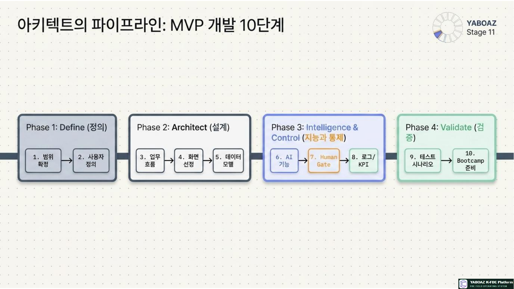
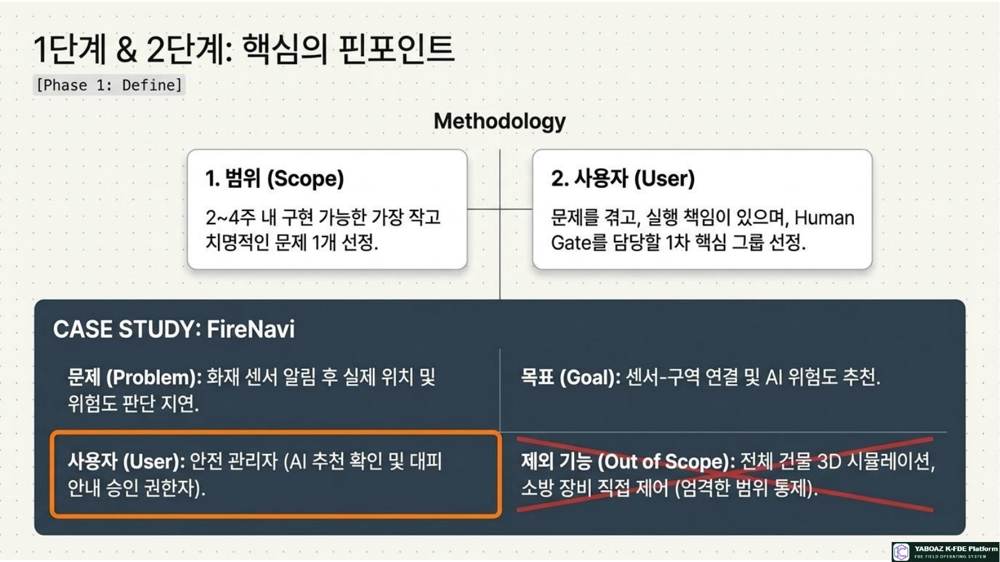
4. 범위·사용자·업무 흐름 설계
MVP 범위 질문
| 질문 | 확인 기준 |
|---|---|
| 가장 먼저 해결할 문제는 무엇인가? | 2A4 문제정의·Evidence와 연결 |
| 어떤 KPI가 좋아져야 하는가? | 현재 기준선·목표·측정방법 존재 |
| 2~4주 안에 구현 가능한가? | 데이터·화면·Agent·API 준비도 |
| 무엇을 제외할 것인가? | 전사 통합·완전 자동화·고위험 실행 제외 |
| 현장 사용자가 테스트할 수 있는가? | 사용자·데이터·검증 일정 확정 |
핵심 사용자 선정
| 기준 | 확인 질문 | FireNavi 예시 |
|---|---|---|
| 문제 경험성 | 문제를 직접 겪는가? | 안전관리자 |
| 실행 책임 | 행동을 수행하는가? | 시설 담당자 |
| 승인 권한 | Human Gate 담당자인가? | 안전관리 책임자 |
| 피드백 가치 | 개선에 중요한 사용자인가? | 현장 담당자·입주자 |
FireNavi MVP 업무 흐름
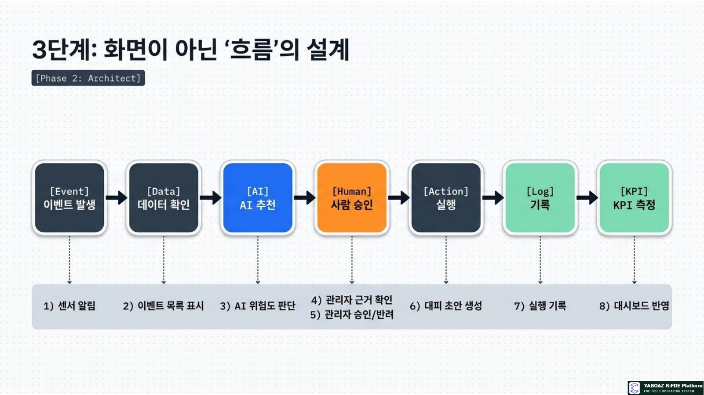
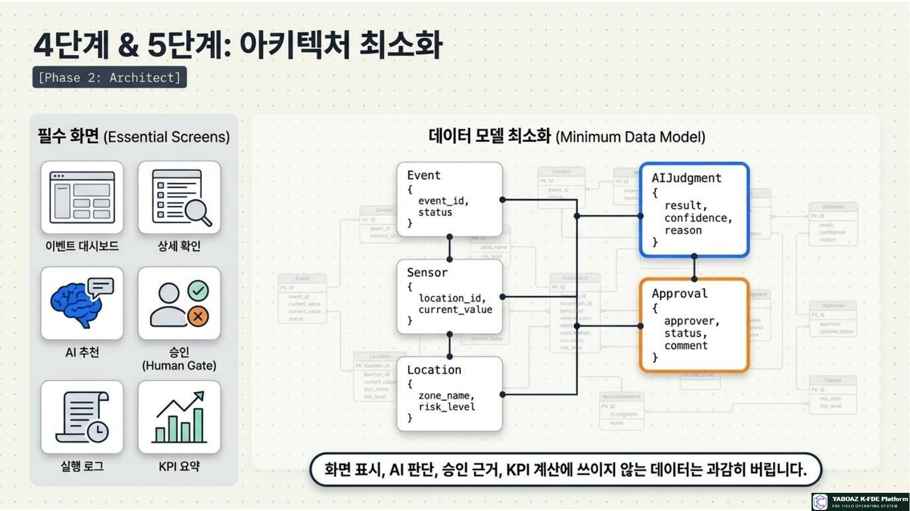
5. 화면·데이터·AI 기능 구현
FireNavi 권장 화면
| 화면 | 핵심 기능 | 완료 기준 |
|---|---|---|
| 이벤트 대시보드 | 센서 알림·위험도·처리 상태 | 신규 이벤트와 상태 표시 |
| 이벤트 상세 | 위치·센서값·Evidence | 판단에 필요한 근거 조회 |
| AI 위험도 추천 | 정상·주의·위험·신뢰도 | 추천·근거·불확실성 표시 |
| 관리자 승인 | 승인·반려·보류·수정 | 사유·승인자·시각 저장 |
| 실행 로그 | 판단·승인·실행·오류 | 감사 추적 가능 |
| KPI 요약 | 처리·승인·오류·채택률 | 기간별 측정 가능 |
최소 데이터 모델
| 객체 | 필수 필드 | 용도 |
|---|---|---|
| Event | event_id, sensor_id, occurred_at, status | 시작 사건과 상태 |
| Sensor·Location | sensor_id, location_id, zone, risk_level | 판단 입력 |
| AIJudgment | judgment_id, result, confidence, reason | AI 추천과 근거 |
| Approval | approval_id, approver, status, comment | Human Gate |
| ActionLog | log_id, action_type, actor, timestamp, result | 실행 기록 |
| KPIRecord | metric_name, value, measured_at | 성과 측정 |
AI 기능 범위
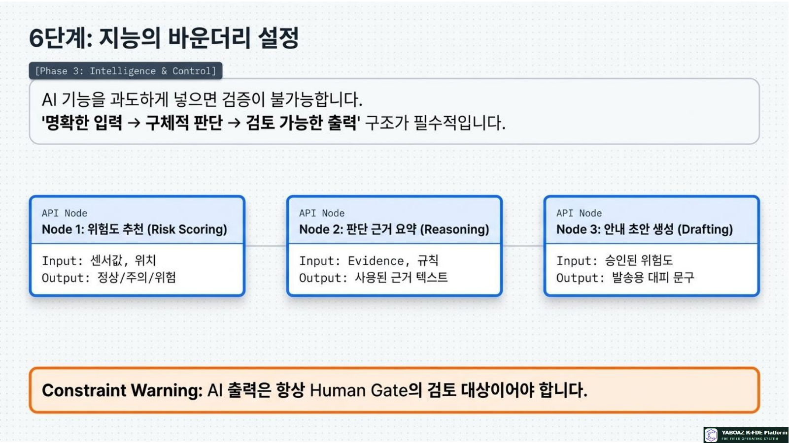
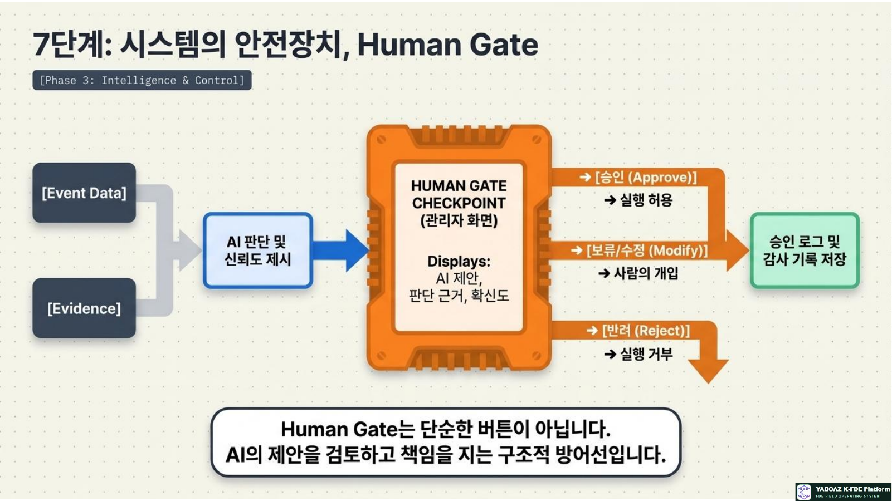
6. 바이브코딩 프롬프트·Human Gate·로그
좋은 바이브코딩 프롬프트 구성
Human Gate 최소 기능
| 기능 | 필수 표시·행동 |
|---|---|
| 추천 결과 | AI가 무엇을 제안했는가 |
| 판단 근거 | Evidence ID·규칙·입력 데이터 |
| 신뢰도·리스크 | 확신도·불확실성·잘못된 실행 위험 |
| 결정 | 승인·반려·보류·수정 |
| 기록 | 승인자·시각·사유·실행 결과 |
필수 로그
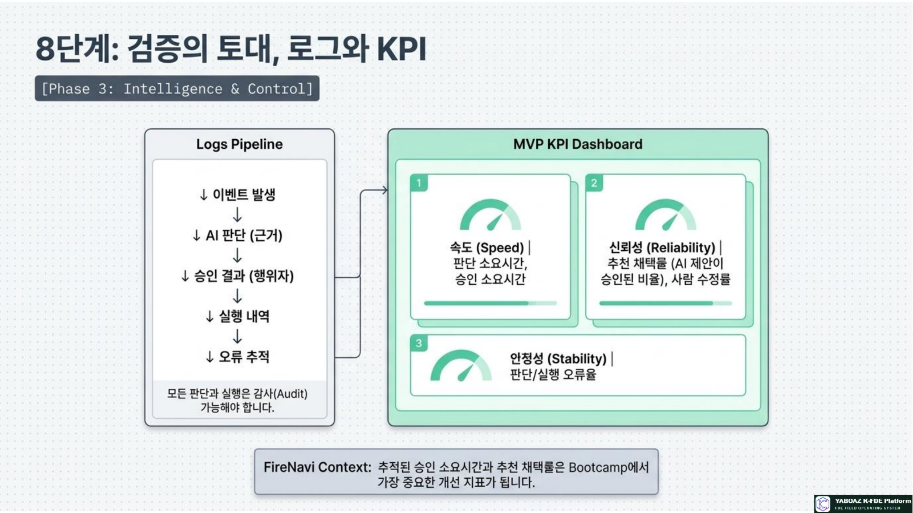
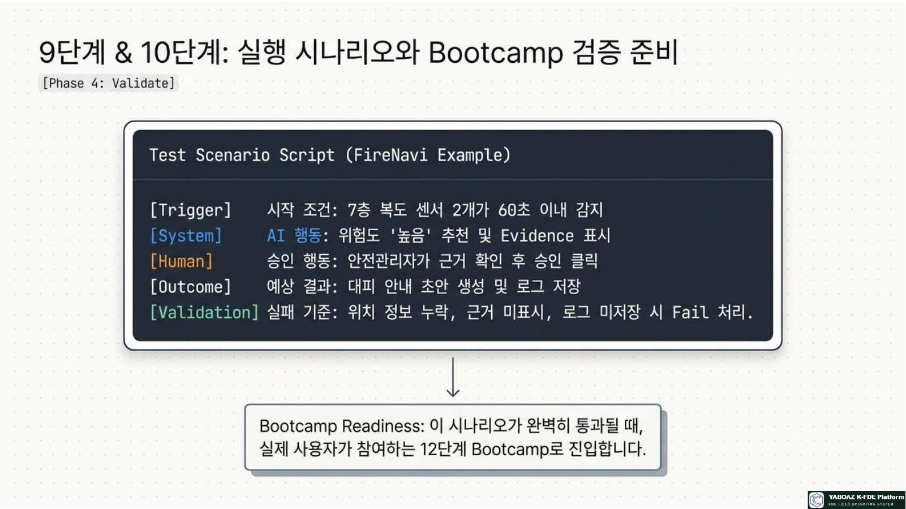
7. 테스트·KPI·MVP 완료 기준
테스트 시나리오 표준
| 항목 | 내용 |
|---|---|
| 테스트 이름 | 어떤 상황을 검증하는가 |
| 시작 조건 | 이벤트·데이터·사용자 조건 |
| 사용자 행동 | 사용자가 무엇을 하는가 |
| AI 행동 | 무엇을 추천하고 근거를 표시하는가 |
| 승인 행동 | 승인·반려·보류 중 무엇을 하는가 |
| 예상 결과·KPI | 실행 결과와 측정값 |
| 실패 기준 | 누락·오류·로그 미저장·근거 미표시 |
FireNavi 테스트 예시
| 항목 | 내용 |
|---|---|
| 시작 조건 | 7층 복도 센서 2개가 60초 이내 감지 |
| AI 행동 | 위험도 높음과 판단 근거 추천 |
| 사용자 행동 | 안전관리자가 근거 확인 |
| 승인 행동 | 승인 후 대피 안내 초안 생성 |
| 예상 결과 | 승인·실행·로그 저장 |
| 실패 기준 | 위치 누락·근거 미표시·승인 로그 미저장 |
MVP KPI
| KPI | 의미 | 측정 예시 |
|---|---|---|
| 판단 소요시간 | 이벤트부터 AI 판단까지 | 평균 시간 |
| 승인 소요시간 | 승인 요청부터 완료까지 | 3분 이내 |
| 추천 채택률 | AI 추천이 승인·활용된 비율 | 70% 이상 |
| 사람 수정률 | 사람이 추천을 수정한 비율 | 지속 감소 |
| 오류율 | 판단·승인·실행 오류 | 1% 이하 |
| 사용자 만족도 | Bootcamp 참여자 평가 | 설문·인터뷰 |
MVP 완료 기준
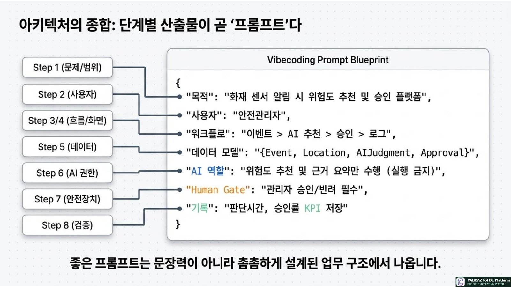
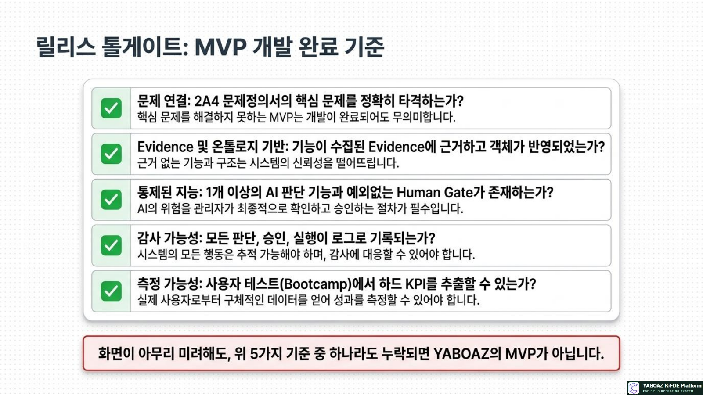
8. FireNavi MVP·실습·다음 단계
MVP 이름과 목적
포함·제외 범위
| 포함 | 제외 |
|---|---|
| 이벤트 목록·상세, AI 위험도 추천, 근거 요약, 관리자 승인, 실행 로그, KPI 요약 | 전체 건물 디지털트윈, 실시간 인원 추적, 자동 대피 방송, 소방 장비 제어, 모바일 앱 전체 기능 |
교육 실습 구성
| 시간 | 내용 |
|---|---|
| 40분 | 문제 범위·사용자·업무 흐름 확정 |
| 60분 | 필수 화면·최소 데이터 모델 설계 |
| 60분 | AI 기능·Human Gate·로그·KPI 정의 |
| 120분 | 바이브코딩 MVP 1차 구현 |
| 60분 | 정상·예외 테스트와 오류 수정 |
| 50분 | KPI 확인·발표·자산화 후보 정리 |
설계된 실행 구조를 실제 사용자가 조작하고 검증할 수 있는 최소 실행 플랫폼으로 만들고, Bootcamp의 피드백을 개선 백로그와 재사용 가능한 플랫폼 자산으로 전환하는 것입니다.
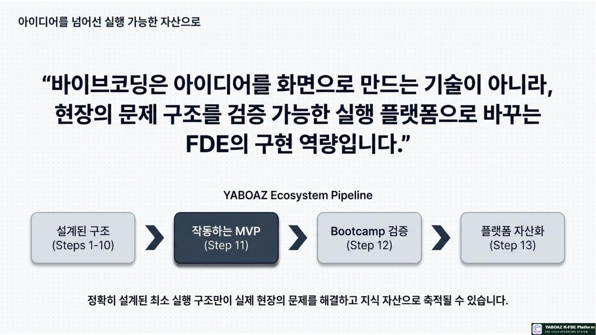